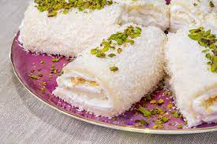

Kaç Kişilik: 8 adet
Hazırlama Süresi: 30 dakika
Pişirme Süresi: 20 dakika
Saray Lokumu Tarifi için Gerekli Malzemeler
Muhallebisi İçin:
- 1 litre süt
- 1 su bardağı un
- 1 su bardağı toz şeker
- 1 paket vanilin
Kaplaması İçin:
- 1,5 su bardağı Hindistan cevizi rendesi
- 1 paket krem şanti (1 su bardağı sütle çırpılmış)
- 1 su bardağı fındık (rondoda çekilmiş)
Üzeri İçin:
- 1/2 su bardağı antep fıstığı tozu (veya parçacıkları)
Saray Lokumu Nasıl Yapılır?
- Orta boy bir tencerede süt, un ve toz şekeri muhallebi kıvamına
gelene dek karıştırarak pişirin. Muhallebi koyulaştıktan sonra
vanilin ve tereyağını ekleyip ocaktan alın.
- Fırın tepsisine rendelenmiş Hindistan cevizini yayın.
- Üzerine hazırladığınız muhalebiyi eşit şekilde yayın. Spatula
yardımıyla düzeltip önce oda sıcaklığında soğumasını bekleyin,
ardından 2 saat buzdolabında bekletin. Tepsiye döktüğünüz muhallebi
buzdolabında soğurken, sütle toz krem şantiyi çırpın ve buzdolabında bekletin.
- Yeterince soğuyan muhallebiyi buzdolabından çıkarın ve hazırladığınız krem şantiyi üzerine yayın.
- Muhallebiyi 8 eşit parçaya bölün ve üzerine rondodan geçirdiğiniz fındığı serpiştirin.
- Spatula yardımıyla her parçayı rulo halinde sarın.
- Üzerlerine Antep fıstığı serpiştirip sevdiklerinizle afiyetle tüketin.